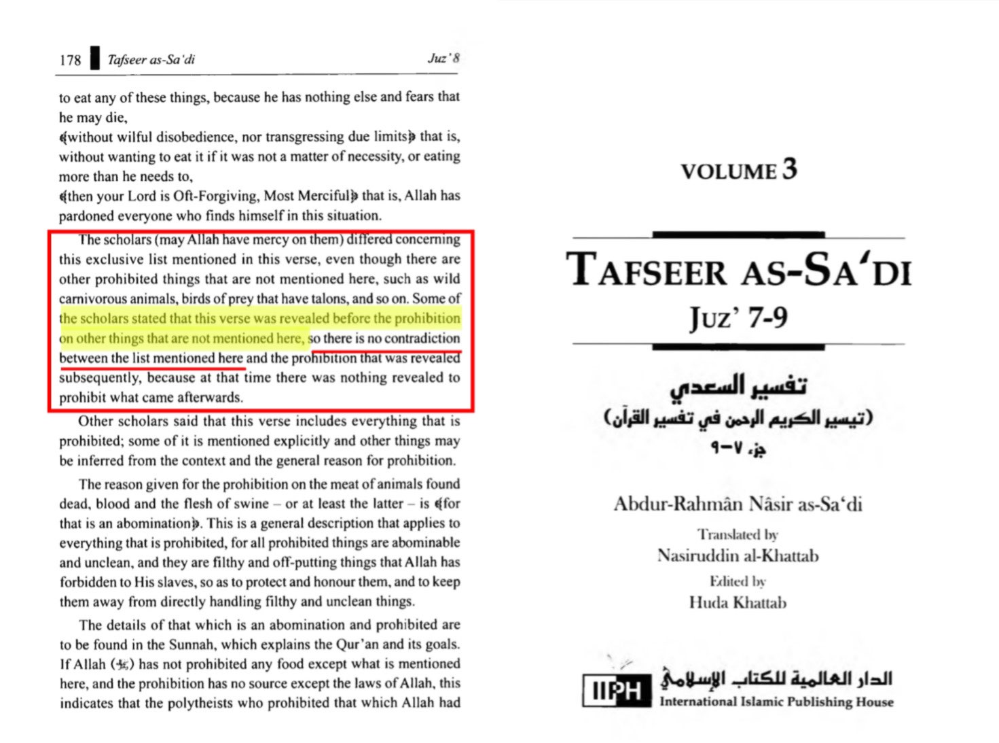
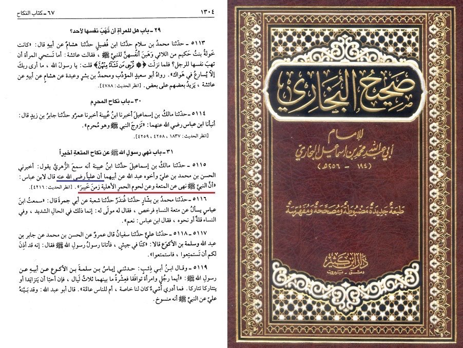

Verse 4:59-
! Obey Allah and obey the Messenger and those in authority among you. Should you disagree on anything, then refer it to Allah and His Messenger, if you ˹truly˺ believe in Allah and the Last Day. This is the best and fairest resolution.
1) This verse cannot be abrogated and has to be applicable today, as the ruling is "the best and fairest solution"
Should one say it is abrogated and not applicable to today's audience, it would contradict verse 2:106 that makes the purpose of abrogation clear:
"“Whatever a Verse (revelation) do We abrogate or cause to be forgotten, We bring a better one or similar to it. Do you not know that Allah is able to do all things?"
How can you bring a better ruling than the "best and fairest one"? You can't
2) The Quran makes a clear distinction between 3 forms of obedience: Allah, the messenger, and the authorities among us.
Thus, one cannot say they are synonymous with each other (I.e obeying Allah through the Quran means obeying the messenger).
It does not say "Obey Allah and the messenger", nor does it say "Obey Allah through the messenger", it says "Obey Allah and Obey the messenger". A clear distinction.
3) Since we established there is a scriptural distinction between obeying the messenger and obeying the Quran, we must be able to obey both through distinct sources. This is because nowhere in the Quran does the messenger tell us to do things, therefore his commands (which we already established are distinct) must come from an external source.
This external source can only be the hadiths.
4) The hadiths must be trustworthy. If the hadiths are the only way to obey the messenger's distinct commands, and obeying the messenger is a condition for the Muslim, then the hadiths must be trustworthy, otherwise such obedience is impossible, and the condition needed for one's belief becomes impossible. This is clearly absurd and contradicts verse 2:286-
"Allah does not require of any soul more than what it can afford"
https://sunnah.com/ibnmajah:42
https://sunnah.com/ibnmajah:43

